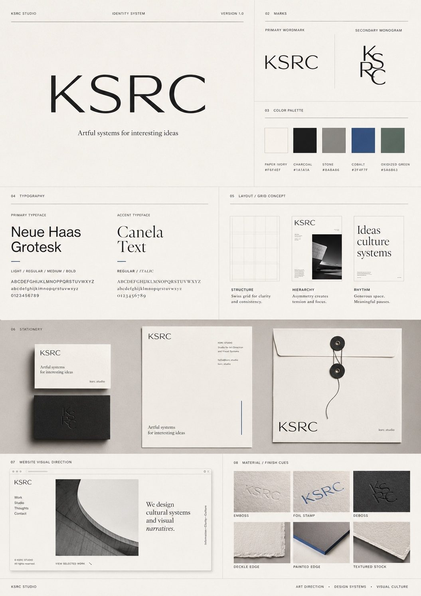
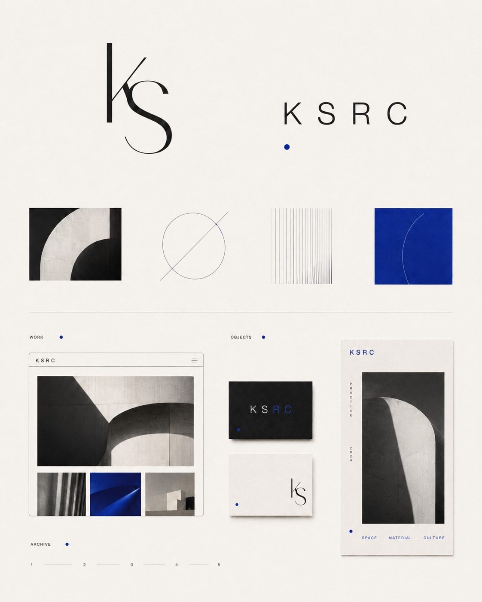
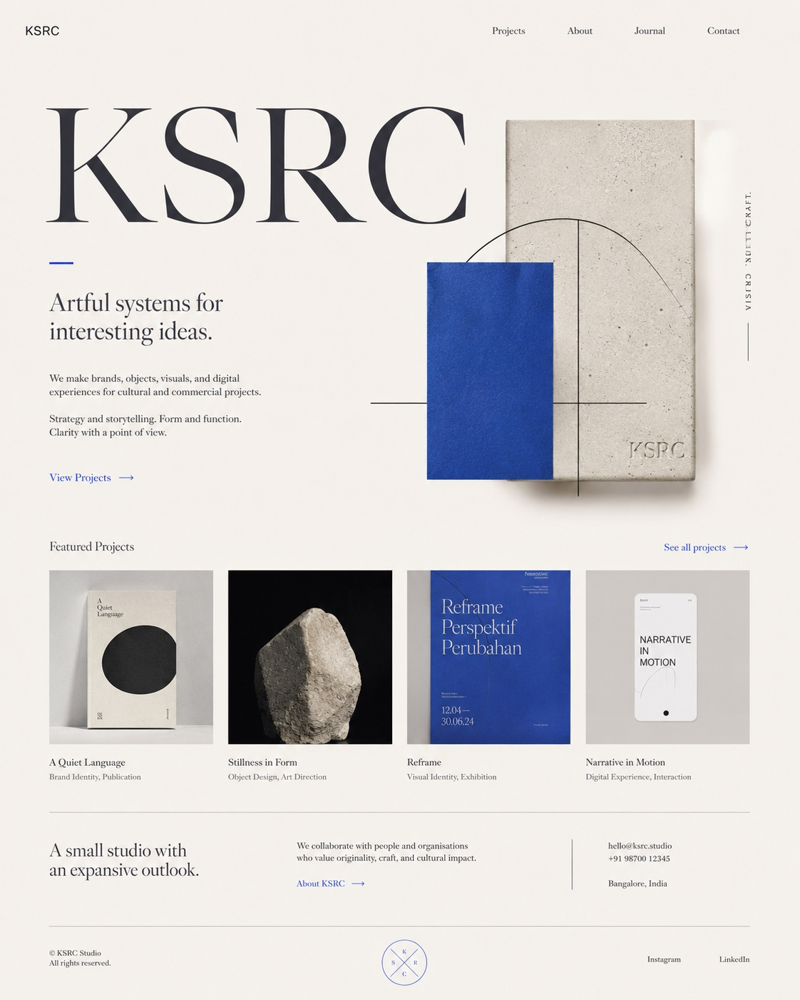

Selected Work
Six projects. Different contexts. One standard.

01 — 2025
Wellness Brand
Identity System
Complete visual identity — from first mark to final guideline. Built to outlast trends.
02 — 2025
Editorial
Campaign
Art direction for an Instagram editorial series. Cinematic tension, zero decoration.



04 — 2024
Podcast
Universe
Identity, script architecture, visual language. A show built from the inside out.
05 — 2024
ADHD
Daily App
A tool for focus built with restraint — calm, gamified, and genuinely useful.


06 — 2024
Skincare
Content Strategy
Structure as aesthetic. SEO architecture that reads like editorial writing.